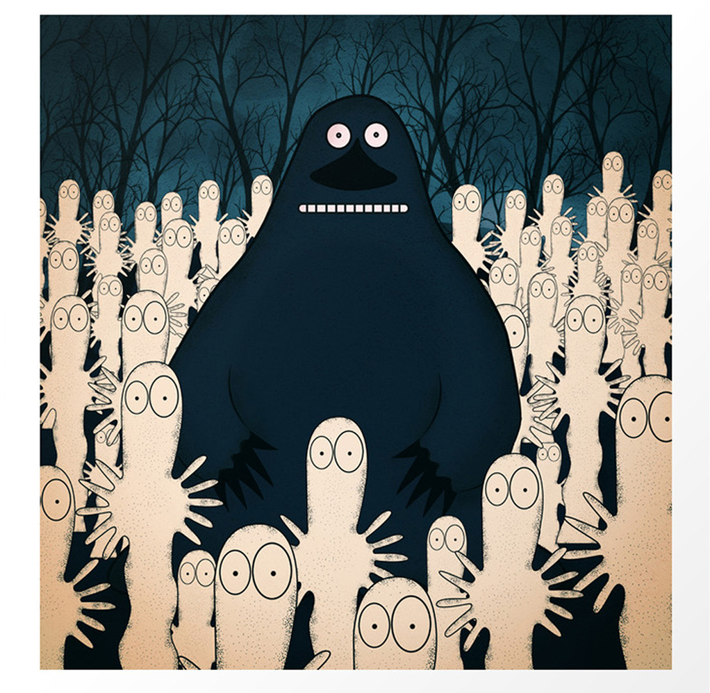

About Groke
The Groke is misunderstood, She's damn terrifying but she is harmless, just got those moody vibes. She basically freezes everything until she gets what she wants....legend.

Groke and her friends
Groke's Characteristics
- She's spooky as hell
- She probably knows it
- She likes shiny shells
Groke's friends
Groke gets her kicks outta bothering the Moomins and their friends all the time. She's great. Click on the links below to read more about them: